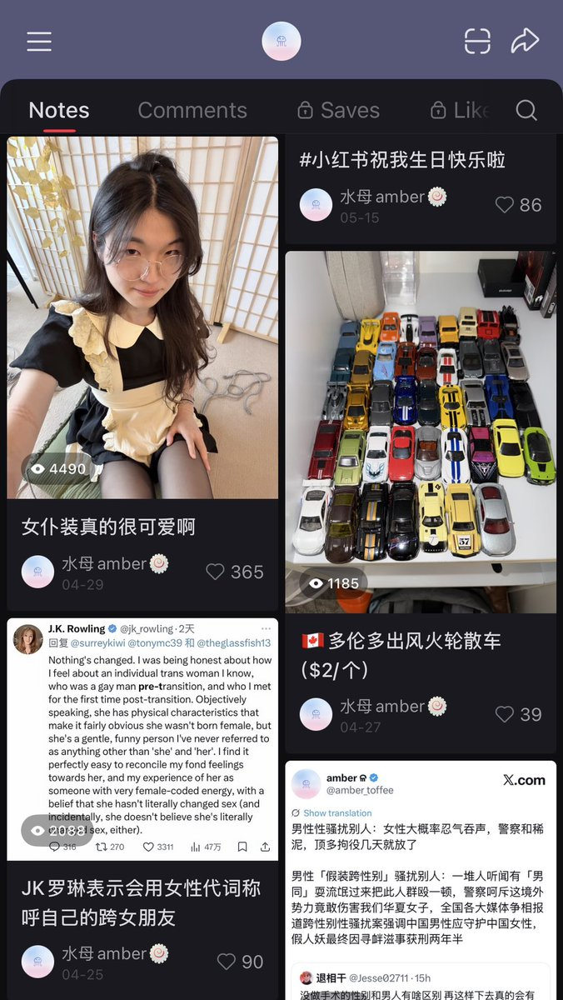
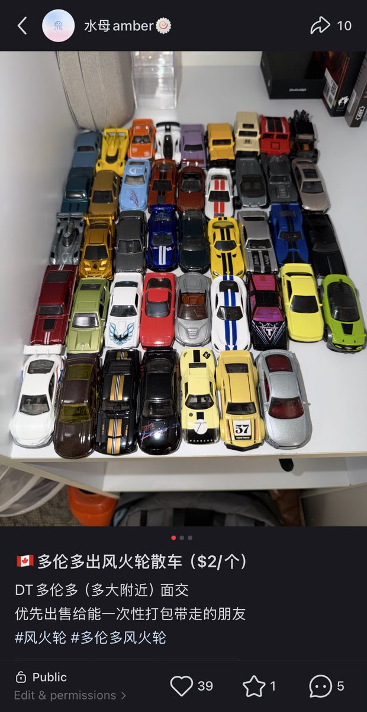

amber
@amber_medusozoa
里面很多车子甚至都是之前在国内买的，来加拿大的时候专门带过来的。出门买小车算是我为数不多能强迫自己出门的契机，否则我真的要每天把时间耗费在吃东西和催吐上了，我就算把这堆车全卖了也值不了几个钱，并且会极大程度上损害我精神状态，不了解情况能不能别乱批判了


amber
@amber_medusozoa
之前就发过卖小车的帖子了，没什么人买而已，现在小红书号也被封了过几天还得发个新的；手上真没钱并且房租也没交，就这么一个兴趣爱好求各位姐姐们放过我吧 https://t.co/WPSxHffZ22 https://t.co/IzIyNFSOF7